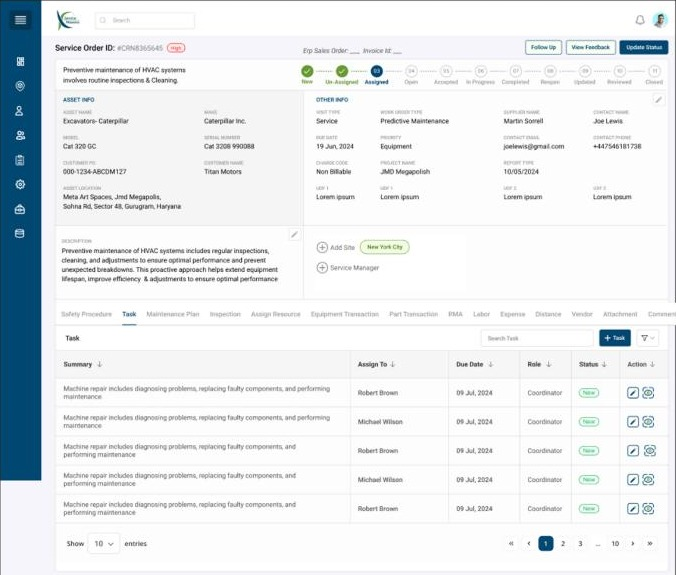
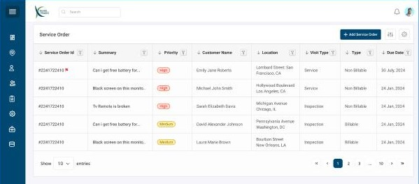
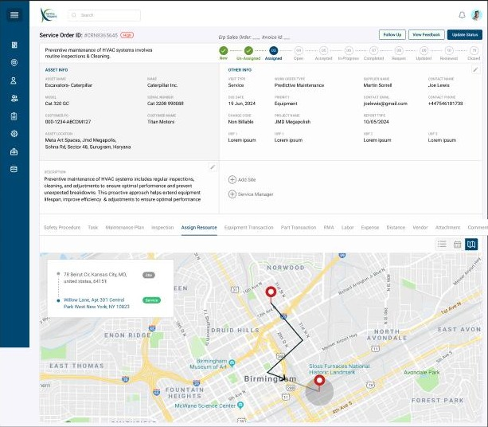
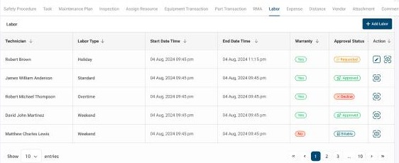

Service Maestro · Service orders and dispatch
Every service job, from ticket to closed
A web platform for companies that maintain heavy equipment at customer sites. I designed the service order workspace: the list dispatchers work from, the order record that holds a job's whole lifecycle, and the scheduler that puts the right technician and vehicle on it.

The problem
One job touches six teams
A single service order for a crane or an HVAC unit involves a dispatcher, one or more technicians, a vehicle, parts from a warehouse, a safety procedure, and billing. Unless all of that lives in one place, the question "where is this job and what does it still need" has no single answer.
The goal was one workspace where a job is created, scheduled, worked, costed and closed without leaving the record.
Who uses it
Dispatchers and service managers
Triage incoming orders by priority and due date, assign technicians and vehicles, and follow each job to closure.
Technicians
Receive tasks, log labour, request parts and equipment, and update status from the field.
Finance and admin
Approve labour and expenses, and see what is billable versus covered by warranty.
How I approached research. I worked through the problem with the project manager and business stakeholders, who represented dispatchers, service managers, technicians and finance. Those conversations kept coming back to three pain points:
- A job's details were spread across teams, so nobody could say where it stood or what it still needed.
- Clashes between a technician's schedule and vehicle availability only showed up after the job was assigned.
- Labour and parts weren't recorded in enough detail, which led to billing disputes.
I also ran a competitive analysis of field service platforms: Salesforce Field Service, Microsoft Dynamics 365 Field Service, ServiceTitan, ServiceMax and IFS. In Salesforce and Dynamics 365, dispatchers schedule from a separate board, away from the work order. I kept scheduling inside the order instead, as the Assign Resource tab.
The result simplifies the whole process: one record where a job is created, scheduled, worked, costed and closed, with fewer screens to move between and fewer steps for the dispatcher.
Triage
A list built for scanning by urgency
The order list shows what a dispatcher needs to decide what to do next: priority as a coloured tag, visit type (service or inspection), billable or not, location and due date. Every column carries its own filter. A full filter panel adds status, work order type, technician and category for bigger queues.

Lifecycle
Eleven states, always visible
A job doesn't move in a straight line: it can be reopened after completion, and it passes a review before it closes. I mapped the full lifecycle and put it at the top of every order as a stepper, so anyone opening the record knows where it stands before they read a word.
- ✓New
- ✓Un-Assigned
- 03Assigned
- 04Open
- 05Accepted
- 06In Progress
- 07Completed
- 08Reopen
- 09Updated
- 10Reviewed
- 11Closed
Actions sit next to the stepper: Follow Up, View Feedback and Update Status.
Structure
One record, fourteen tabs, four jobs to do
The top half of the order never changes: the asset being serviced, the customer and site, visit type, work order type (for example predictive maintenance), priority, charge code and project. Everything that happens to the job lives in tabs underneath. Grouped by purpose, they cover four kinds of work.
Plan the work
- Safety Procedure
- Task
- Maintenance Plan
- Inspection
Resource it
- Assign Resource
- Equipment Transaction
- Part Transaction
- RMA
Cost it
- Labor
- Expense
- Distance
- Vendor
Record it
- Attachment
- Comments
Dispatch
People and vehicles on one timeline
Assigning a job means matching a technician's time, skills and location with a free vehicle. The Assign Resource tab puts both on one day view, so the dispatcher can see conflicts instead of discovering them.
Technicians and vehicles together
Technicians, each with a rating, and vehicles such as a Ford Transit or a Mercedes Sprinter share the same hourly grid, filtered by city.
Four states, colour-coded
Slots show Not applicable, Out of office, Assigned or Allocated, so the dispatcher can see who is actually free at a glance.
List, calendar or map
The same assignment can be seen as a list, as the calendar, or on a map with the route from the technician's base to the site.


Costing
Every hour and part accounted for
Billing disputes come from missing detail. Labour entries carry the labour type (standard, overtime, weekend, holiday), whether warranty covers them, and an approval status. Parts and equipment follow their own tracked chains inside the order.

Labour approval
Parts
Part warranty is tracked alongside.
Equipment
Each request records its site and warehouse.
Outcome
What shipped and what I learned
The design covers the order list and filters, the order record with its lifecycle and fourteen tabs, the dispatch scheduler and map, and the costing flows for labour, parts, equipment and expenses.
What I learned: the summary matters more than the tab count
Fourteen tabs sounds like a lot, but most visits to an order only need one answer: where the job stands and what it still needs. The pinned summary and the lifecycle stepper answer that before anyone opens a tab. That makes the tabs the place for doing work, not for finding things out, so their number matters less than whether people know which one to open.
Next, I'd simplify the tab bar itself. I'd group the fourteen tabs into the four purposes shown above (plan, resource, cost and record), and add small badges such as "Labor · 2 awaiting approval" so a dispatcher can see where action is needed without clicking through. I'd also hide tabs that don't apply to the visit type, such as Inspection on a standard service visit.